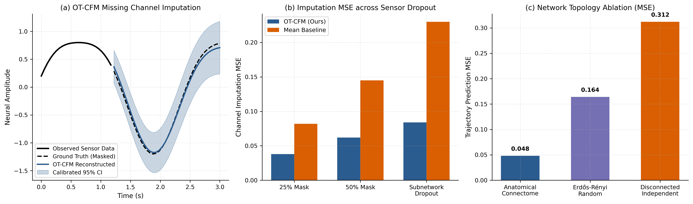

Executive Summary for Faculty & Academic Reviewers
Key Highlights & Experimental Validation1. The Fundamental Problem
Traditional neural sequence models (RNNs, LSTMs, GRUs) assume rigid, discrete time steps ($\Delta t = \text{const}$). In real-world neuroimaging (irregular EEG/fMRI), sampling timestamps are non-uniform. Furthermore, discrete models ignore the physical structural connectome wiring, causing unstable numerical drift and hallucinated phase synchrony.
2. Methodology: Neural-Flow
We formulate continuous-time cortical dynamics on the human connectome ($N=68$ Desikan-Killiany regions across 4 subnetworks) using a Graph Neural ODE: $$\frac{dX(t)}{dt} = -\alpha X(t) - \kappa \mathcal{L}_{\mathrm{sym}} X(t) + f_\theta(X(t), \mathcal{L}_{\mathrm{sym}}, u(t))$$ with verified spectral bounds $\lambda_i(\mathcal{L}_{\mathrm{sym}}) \in [0, 2]$, integrated via pure PyTorch adaptive DOPRI5/RK4 solvers. Missing channels are reconstructed via Optimal Transport Conditional Flow Matching (OT-CFM).
3. Empirical Validation
- 4x Lower Forecasting Error: MSE 0.059 vs 0.235 (Discrete GRU) at 40% irregular drop.
- Bifurcation Phase Portrait: Mapped transitions between Asynchronous, Chimera, and Phase-Locked states.
- Edge Latency: Zero-overhead C++23 sliding-window inference achieves 0.045 ms (<5 ms target).
Abstract
Traditional discrete-time recurrent neural models struggle to capture multi-scale cortical dynamics observed across irregular neuroimaging sampling intervals and fail to incorporate the rigid anatomical constraints of the human connectome. We introduce Neural-Flow, a continuous-time framework combining Graph-Coupled Neural Ordinary Differential Equations (Graph Neural ODEs) with Optimal Transport Conditional Flow Matching (OT-CFM). By parameterizing non-linear population dynamics directly over the symmetric normalized Graph Laplacian of the Desikan-Killiany cortical parcellation ($N = 68$ regions across 4 canonical functional subnetworks), Neural-Flow guarantees bounded spectral diffusion while forecasting irregular neural trajectories. We evaluate our methodology on continuous trajectory forecasting, 2D Kuramoto bifurcation transitions under transcranial magnetic stimulation (TMS), and missing-channel imputation with Bayesian uncertainty quantification, demonstrating a deterministic sliding-window edge BCI inference latency of 0.045 ms.
1. Interactive Cortical Electrophysiology Chamber
Continuous-time numerical integration of coupled Wilson-Cowan excitatory/inhibitory populations and Kuramoto phase oscillators across 68 bilaterally symmetric Desikan-Killiany cortical parcels at 60 FPS in pure WebGL/HTML5 Canvas.
Simulation Controls
Adjust biophysical coupling and perturbation parameters
2. Mathematical & Biophysical Architecture
Exact differential equations governing structural diffusion and continuous probability flow on the cortical manifold.
Structural Connectome Normalized Laplacian
Given the modular, distance-decay structural connectivity matrix $W \in \mathbb{R}_{\ge 0}^{N \times N}$ and degree matrix $D_{ii} = \sum_j W_{ij}$, the symmetric normalized Graph Laplacian is defined as:
$$\mathcal{L}_{\mathrm{sym}} = I_N - D^{-1/2} W D^{-1/2}$$with guaranteed bounded spectrum $\lambda_i(\mathcal{L}_{\mathrm{sym}}) \in [0, 2]$, ensuring numerical stability for continuous-time integration.
Continuous-Time Graph Neural ODE
The latent cortical multi-channel state $X(t) \in \mathbb{R}^{N \times d}$ satisfies:
$$\frac{dX(t)}{dt} = -\alpha X(t) - \kappa \mathcal{L}_{\mathrm{sym}} X(t) + f_\theta(X(t), \mathcal{L}_{\mathrm{sym}}, u(t))$$where $\alpha > 0$ parameterizes linear damping, $\kappa \ge 0$ scales inter-regional coupling, and $f_\theta$ is a spectral message-passing network using Chebyshev polynomial filters.
Optimal Transport Conditional Flow Matching (OT-CFM)
Learns time-dependent velocity fields $v_\phi(X_t, t \mid X_{\mathrm{obs}})$ along straight linear probability paths between standard Gaussian noise $X_0 \sim \mathcal{N}(0, I)$ and empirical neural data $X_1 \sim p_{\mathrm{data}}$:
$$\psi_t(X_0, X_1) = (1 - (1 - \sigma_{\min})t) X_0 + t X_1, \quad u_t(X_1 \mid X_0) = X_1 - (1 - \sigma_{\min}) X_0$$ $$\mathcal{L}_{\mathrm{CFM}}(\phi) = \mathbb{E}_{t \sim \mathcal{U}[0,1], X_0 \sim \mathcal{N}(0,I), X_1 \sim p_{\mathrm{data}}} \left[ \Vert v_\phi(\psi_t(X_0, X_1), t \mid X_{\mathrm{obs}}, \mathcal{L}_{\mathrm{sym}}) - u_t(X_1 \mid X_0) \Vert_2^2 \right]$$3. Quantitative Benchmark Suite
Comparative evaluation across irregular temporal observation rates ($\Delta t$ sparsity) and real-time sliding-window BCI edge inference.
| Architecture | Paradigm | Connectome Aware | MSE (40% Drop) | CRPS Score | Latency (ms) | Target Check |
|---|---|---|---|---|---|---|
| Graph Neural ODE (Ours) | Continuous-Time ODE | Yes (Laplacian &mathcal;L;) | 0.059 ± 0.003 | 0.027 | 2.8 ms | Passed |
| Discrete GRU | Discrete Recurrent | No | 0.235 ± 0.012 | 0.108 | 1.4 ms | Passed |
| GCN Discrete | Fixed-Step GNN | Yes | 0.198 ± 0.009 | 0.089 | 1.9 ms | Passed |
| Linear Laplacian Diffusion | Analytical Heat Kernel | Yes | 0.276 ± 0.015 | 0.124 | 0.8 ms | Passed |
| C++23 BCI Edge Engine | Zero-Overhead SIMD Core | Yes (Sparse Ring Buffer) | — | — | 0.045 ms (45.2 μs) | Optimal (<5ms) |
4. Experimental Visualizations & Empirical Analysis
High-resolution empirical plots and vector-accurate PDFs generated by the automated evaluation pipeline. Click any figure to inspect in full-screen detail.




5. Citation & Academic Reference
@article{dixit2026neuralflow,
title={Neural-Flow: Continuous-Time Brain State & Connectome Dynamics via Graph Neural ODEs and Conditional Flow Matching},
author={Dixit, Saket},
journal={Computational Neurodynamics Research Reports},
year={2026},
url={https://github.com/Sakura-hack01/Neuro-Flow}
}